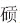

佛家以因果看人生。凡事，有因即有果，什么因得什么果，一切的果皆可到它的因上去求解。所以劝人行善，不为恶。一旦作了恶，事情就会自动生成一种惯性来，让人越来越恶，即便想超拔也身不由己。
有人以为，恶人是注定的，其实不。有一时一事作恶的人，但没有永生永世情愿做恶人的人。人之所以作恶，说到底是受一种赌徒心理支配，对寻常、本分的生存不满也不甘，希望比别人少费几十倍的气力或突然间暴得这样那样的大利益，于是，打破常规，去做平常人、规矩人不肯做或不敢做的事，这多半是孤注一掷，抛开通常的人性准则（道德、法律、内心良知等）用整个人生来赌一把。这种念想本身就是恶的，一旦把它付诸实行，则必做下这样那样的恶事。因为大家都在有一分耕耘、得一分收获，凭什么你少付出那么多却得到很大利益？你这么做了，势要侵害、损害他人，这不是恶是什么呢？但天底下恶人其实还有一个心理，即当他占了大便宜后，还愿意安心过日子，过比别人更好的日子。没有一个作恶之人，目的是毁掉自己。相反，他作了恶以后，还想享受作恶得来的成果。比方说，贪污的官人一定会想着弄到大笔的钱后，平平安安，人不知鬼不觉，做一个体面人——这些人可恨之处，正在于此，损害了社会和他人，还期求不遭报应——不过，我们这里暂不去诅咒他们的无耻，而着重了解他们的心理：原来，他们也并不愿意一直充当恶人，他们作恶的起因是想靠偷赖、走捷径或撇下大家都遵守的准则替自己谋幸福；亦即，作恶也是为了追求幸福。从追求幸福角度说，作恶之人与常人无有不同。这一点上他们极不讲理，凭什么你作恶了还想得到幸福？不过，他们的逻辑就是这样。只可惜，人类社会和历史的公信不支持这种逻辑，否则，天下只好一片混乱。由于人类社会和历史的公信不支持，作恶之人的动机与结果之间，就永远发生不可调和的矛盾。正义认为：恶人必须得到报应。这绝非徒然给好人无谓慰藉的宿命论，而是社会的自我保护机制；若非这机制，人类无法存在和发展到今天。怎么报应？现实中许多善良守法的人往往很不平地指出，作恶之人干了坏事，却有权有势、花天酒地，好处全都归了他们。的确如此，我们常常看到丑恶的人似乎比谁活得都好。但是大家却不曾注意过，没有一个坏人能够终止作恶，捞一把然后安享所得、过一种从外在到内心都是体面人的生活，相反，他们要不断作恶，一天都不能停歇，用新的作恶来维持他们不正当得来的一切。这实际上是违背他们最初愿望的。作恶之后，人最想要的是安全。比方说，一个入室窃贼，被人发现，如有可以安全逃窜的机会，他一定选择逃窜；但往往得不到这样的机会，遭窃的事主或出于本能，或出于气愤，总会想阻止他逃掉，这时，窃贼极可能作下更大的恶，例如杀掉事主——他为什么这样呢？分析一下，结论是很可以吃惊的：他是为了安全，为了掩盖自己的罪恶！一个入室窃贼如此，一个拦路抢劫者，或实施强奸者，或一个贪墨弄权者，莫不如此。所以，作恶有自己的连锁效应，如滚雪团。大多数作恶之人，开始都想得很好，一旦得逞，就罢手不干，带着作恶的成果悄悄过好日子去。但天底下岂有这等美事？恶无法指望善的荫护的羽翼，恶只能寻求恶的保护。人一旦作下恶，就只好加大作恶的力度来保全自己，用大恶来化解小恶的危险。受贿一百万的人，一定会继续收贿并且同时变成行贿者，收更多的钱，来买跟他一样的同类，巴不得身边的人都变得跟他一样坏，这样他就安全了；于是，三百万、五百万、一千万……越陷越深，越走越远，唯如此他才能将那最初一百万带给自己的危险处境对付过去。很多人以为这是这些作恶之人欲壑难填，实则他们更多倒是自有苦衷，身不由己。一个人只要作了恶，就会永受这种惩罚，罚他们不得停歇地把恶一直作下去，最初的恐惧无限放大，一辈子活在惶惶不可终日的感受中。不管表面上看去怎样作威作福，他们心里却清楚得很：这不是人过的日子。今天那些贪黩的大官，被挖出来后，当着摄像机镜头一个个痛哭流涕、悔不当初，很多人觉得是做戏，我却认为是他们内心的真切流露，因为那确不是人过的日子；人类社会为了能够有序健康地延续下去，终究不会，也不能给这种人好日子过。
眼下，永乐大帝朱棣先生，也活在作恶后的恐惧中，也不能耐受梦魇般的纠缠。他也跟每个成功得手的歹徒一样，特别希望“从良”，回到社会公信的尺度中来，做个名誉的人，让他的非法所得被人看成正当的、他理该得到的一份。
一些事，袒露了他内心的不自信——或者，也是屈服。
先焚毁历史，然后伪造历史。朱彝尊讲过一句话：“盖革除年事，多不足信。”[53]为什么？禁毁甚严，又大加舛改，致使真相大多湮没。《明史》“王艮传”提及，“后成祖出建文时群臣封事千余通，令缙等遍阅，事涉兵农钱谷者留之，诸言语干犯及他，一切皆焚毁。”[54]“封事”就是奏折。“缙”即建文旧臣解缙，他归附朱棣后受到重用。就是说，朱棣向那些归附他的建文旧臣出示这一千多件奏折，除议论国防、农业和财政的以外，统统烧掉。他是极伪诈的人，表面上用这一手来释放那些归附者的不安，实际目的却是彻底消灭一切不利于自己的言论和材料，一石二鸟。他以为，把过去留下来的一切这类关于他的议论，抹除干净，就可以给自己只树立一个正面形象，堂堂皇皇享受所窃据的位子。
这样的“形象工程”还包括：严禁民间自由谈论或书写建文朝这段历史——他的说法是“怀疑怨谤”，犯此罪者，“事发族灭”[55]，将处以最高的惩治。这可不是说着玩吓唬人的。有个叫叶惠仲的文人，就受到了这种惩治，“永乐元年，坐直书‘靖难’事，族诛。”[56]
将真相加以禁止以后，还需要再编造假话。永乐年间重修《太祖实录》，只修一次不够，又修了第二次，才算比较满意。明代诸帝实录，均由继任者负责修定前任的事迹，朱允炆已经修过《太祖实录》，但朱允炆搞的东西，自然靠不住，必须重来。目的有两个，一是把有利于朱允炆的记述删减干净，一是添加直至杜撰对自己涂脂抹粉的内容。当然还有一点，由他朱棣来修《太祖实录》，等于否认朱允炆是朱元璋的合法继承人。两次重修后的《太祖实录》，朱允炆要么被批判为数典忘祖、奸恶浊乱；实在不能丑化的，例如建文时代良好的政绩，就讳莫如深，只字不提，让它们蒸发掉，好像压根儿没发生过。而一切涉及朱棣自己的地方，不止是丰功伟绩、高大完美，也不止是凭空吹嘘（如《奉天靖难记》所谓朱棣出生时“云气满室，光彩五色，照映宫闼，连日不散”这样的鬼话），尤有甚者，不惜在自己亲生母亲是谁的问题上也撒下弥天大谎。
关于朱棣的生母，《明史》成祖本纪写道：“太祖第四子也，母孝慈高皇后。”这说法，首先由朱棣授意在《奉天靖难记》提出来，再写入篡改后的《太祖实录》；清朝初年，官方修编《明史》，不顾历来的许多疑问，将《实录》的这套说法全盘接受。殊不知，历史的本质是透明的，天王老子也难一手遮天，就算一时勉强遮住，其实也不过是纸糊的灯笼，终究会露出窟窿。其中一个比较靠得住的窟窿，是《南京太常寺志》中记载，在南京旧太庙，供奉着一位妃的神主（牌位），上面明确写着是她生了第四子朱棣。[57]这曾由明代的一位野史作者潘柽章在其《国史考异》中披露。《南京太常寺志》是一份官方文件，现在虽已亡佚，在明代却不止潘柽章一个人见过，至少还有一个人，即万历至崇祯年间的名士何乔远也见过，他很谨慎地写道：“臣于南京见《太常寺志》，云帝为妃所生，而《玉牒》（指《天潢玉牒》，成文于永乐年间，载述朱氏皇族谱系）则为高后第四子。《玉牒》出当日史臣所纂，既无可疑。南太常职掌相沿，又未知其据。臣谨备载之，以俟后人博考。”何乔远话虽说得含蓄，《天潢玉牒》大拍特拍朱棣马屁，臭名昭著——此书居然声称懿文太子朱标“为诸妃所生”，只有朱棣和周王二人的生母是马皇后，所以，连清代《钦定四库全书总目》都斥之多“当时谀妄之词”、“与史实不符”——他提出应该允许《南京太常寺志》之说存在，“以俟后人博考”，明显倾向认为后者真实可信。
不过，无论潘柽章还是何乔远，都只是从《南京太常寺志》读到相关记载，本人毕竟无缘亲见妃神主，所以向来大家也不便轻信。
但到了弘光朝，终于有直接的目击者，他们是礼部尚书钱谦益、大理寺左丞李清。他们都读过《南京太常寺志》，但事实究竟如何，连以博闻著称的钱谦益“亦不能决”。但在弘光元年元旦这一天，以祭祀之机，终于开启孝陵寝殿，发现妃神主确在，且一切均如《南京太常寺志》之所云——李清的原话是：“及入视，果然。”[58]《三垣笔记》清代一直被禁，清末才重见天日；它的证词让史家大为兴奋，孟森先生称，朱棣身世“以前为疑案，《明史》中纪传自相矛盾。自《三垣笔记》出而证明《南太常志》之文”。 不过，我在读张岱的《陶庵梦忆》时，意外发现，早在钱谦益、李清之前，就有目击者，而且时间早两年，发生在崇祯十五年七月。目击人一个是张岱本人，另一个是当时主掌南京太常寺的朱兆宣。朱主持祭典时，张岱随观，得以见之；他写道：
壬午（1642年，即崇祯十五年）七月，朱兆宣簿太常，中元祭期，岱观之。飨殿深穆……近阁下一座，稍前，为妃，是成祖生母。成祖生，孝慈皇后（高皇后）妊为己子（对外宣称自己所生），事甚秘。[59]
不知为何，这条记载孟森先生不曾注意到。
关于朱棣这样干的目的，孟森先生的分析是透彻的：
明初名教，嫡长之分甚尊。懿文太子以长子得立，既死则应立嫡孙，故建文之嗣为一定之理。燕王既篡，无以表示应得国之道，乃自称为马皇后所生，与太子及秦、晋二王为同母，明太子及秦、晋皆已故，则己为嫡长，伦序无以易之矣。[60]
说来说去，还是心中有鬼。
这“鬼”，就是自知干了见不得人的事，又无勇气独自在黑暗中去挣扎，还想把黑洗白，仍然回到光明的世界，做一个见得人的人。
平生不做亏心事，夜半不怕鬼敲门。世上当然没有鬼，敲门者不是鬼，是自己的内心，或者说，人间的公信力。再不可一世的人，也没法与它抗衡，也难当其一击。如朱棣者，为一袭黄袍加诸己身，就让几十万人赔上性命，半个中国遭兵燹之祸。这可不是一般的枭雄，是所谓“干大事”的人。但只一条，他所干的事，没有一丁点儿正义性，而是完全违背，结果虽然大获成功，却没有因此高大起来，反而在内心渺小下去，从豪气走向小偷小摸，连生母也不敢认。他手忙脚乱地掩盖真相，编造假话，指望靠“瞒”和“骗”，重新混到“好人”的行列里来。可哪有这种好事？恶只能拔除，不能洗涮；作了恶，只能老老实实去纠正，正义才可放过之，倘若想的是掩人耳目，用“瞒”和“骗”糊弄过去，便又陷于新的恶。人间的事情，就是这样环环相扣。
对于作恶之人来说，朱棣是有关这类人必受惩罚的上佳例子。对于天下善良的人来说，朱棣一生走过的路，也适足给他们以做“好人”的信念。从富且贵角度看，朱棣已极人寰，但又怎样呢？一辈子说着谎话，心惊肉跳受着偷来的东西，视给了自己生命的母亲为羞辱——这样的人，何尝有片刻安宁？
据说，永乐年间南京最大工程“大报恩寺”，即朱棣为抚平内心不安而下旨兴建的。工程极浩大，动用人力十万，自永乐十年（1412）开工，直到二十二年（1424）朱棣死时仍未竣。规格也高得很破例，朱棣明确批示大报恩寺“梵宇皆准大内式”，就是说，这个佛教建筑群被准许采取皇宫的标准与规制。显然，它对朱棣有特殊意义，并非什么宗教建筑。当时，对外美其名曰，此寺之建，是为报答太祖和马皇后养育之恩，但世间历来相信朱棣建这个东西，系出于对生母妃不孝的赎罪心理，在当地，该寺大雄宝殿不叫大雄宝殿，一直称之“妃殿”。[61]
对朱棣，孟森先生有个概括：“盖篡弑之为大恶，欲济其恶，必有倒行逆施之事。”[62]欲济其恶四个字，是要害。恶，也是一种活泼泼、有生命的东西，就像病毒一样，既顽强，又有惊人可怕的自我复制之能力。一旦激活，它就疯狂地藩衍生长，胃口越来越大，显示出吞噬一切的难以满足感。欲济其恶，讲的就是恶的那样一种难以满足感，或者说一种不可遏止的惯性，一种对能量充分释放的需求。
西方中古的浮士德传说，用一个宗教故事告诫于人，千万不能被“魔鬼”诱惑、和它签约，否则即永世沉沦——所谓“魔鬼”，其实是人内心的恶。对于朱棣来说，他不单受了“魔鬼”的诱惑，并且在协议书上签字画押，所以，是无法摆脱它的纠缠了。